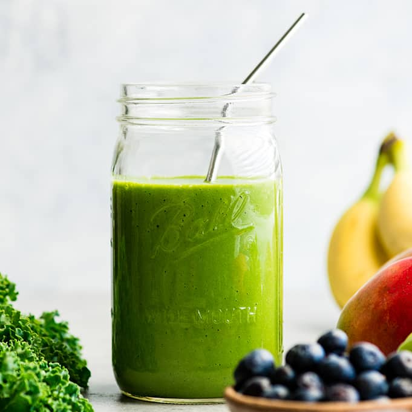

Green Smoothie

Make a quick smoothie to energise your day!
It isn't always feasible to create a full fledged meal when you're rushing to complete tasks. But that doesn't mean you have to eat unhealthy.
With this quick and easy-to-make green smoothie recipe, you get a filling breakfast/snack loaded with fibres, vitamins and essential minerals!
Ingredients
- Spinach 50g
- Kale 50g
- Fresh Microgreens 50g
- Salt and Pepper to taste
- 250 ml Water
Steps
- Wash all the veggies gently under clean water
- Add the washed veggies into a blender
- Add water, salt and pepper
- Blend the mixture
- Pour into a glass and enjoy!